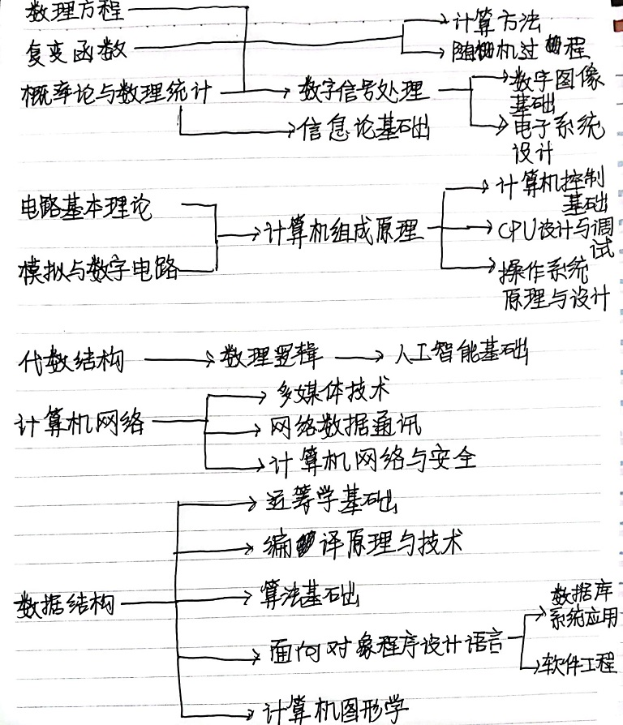

1.计算机学科各课程之间的关系图

2.计算机学科各课程参考资料
深入理解计算机系统
计算机体系结构
算法
程序构造
计算机网络
人工智能
操作系统
3.我对计算机专业的认识
我接触计算机比较晚，高中的时候，中文打字都不流畅，更别提英文打字了。在我学习编程之前，我从未想过程序是如何制作的。然而，在掌握了一些基本的编译和调试方法之后，我也开始“开放”，与人们围绕语言和操作系统的利弊进行争论。在我看来，不用进一步讨论，计算机是20世纪最辉煌的成就之一，它给人类社会带来了巨大的变化。从台式电脑到笔记本电脑，再到新型量子计算机、光子计算机、生物计算机、纳米计算机，新技术的出现越来越多，计算机应用逐渐渗透到社会的各个领域，从国家军事领域到公司运营，这离不开计算机，另外，人们的日常生活越来越离不开计算机，生活娱乐、办公都与计算机技术息息相关。显然，在微处理器性能不断提高的未来，随着人工智能、大数据等技术的应用，计算机可以实现一个宏伟的梦想。
4.我的学业规划
在大一下学期做到，第一，了解计算机网络技术及基本原理和体系结构，包括OSI/RM参考模型和TCP/P体系结构、传统的以太网技术和传统传输介质;掌握IP地址、MAC地址、子网掩码、CIDR的概念;掌握TCP/IP协议簇中的重点协议，掌握网络中关键器材(交换机、路由器、网桥)的工作原理，了解计算机网络发展的前沿技术，了解计算机网络发展的前沿技术，了解我国计算机网络发展的现状。 二、在C++中了解C+ +的发展与特点，掌握C+ +的程序结构、语句格式和标准库的使用。 掌握各种数据类型中的常量的书法方式和变量的定义、赋值、初始化方法，运算符的运算规划和优先级别，能正确书写各种类型的表达方法;掌握键盘输入和屏幕输出语句的书写格式、参数的功能和用法; 用C+ +提供的选择循环语句和相应的函数，编写出符合要求的顺序、选择、循环程序或包含二种，三种结构于一体的综合性程序; 掌握函数、递归函数的定义和调用方法，理解变量的存储类型及作用域;掌握一维数组的定义、 初始化和引用方法区分维数值数组和字 符数组以及存储数据的不同点;掌握指针的概念、指针与地址的关系;理解指针与一维数组的区别与联系，掌握其规律，学会正确使用;掌握结构、联合、枚举类型的定义、赋初值、成员访问方法;掌握文件包含和宏定义的书写方法，理解其运行原理和在程序中的作用;掌握文件的概念、正确运用打开、关闭。读写文件数据的函数。 三、熟练掌握多种网页设计工具 掌握Photoshop的使用，CSS语言，HTML语言的用法和编写，以及对制作网页的熟练度的提高。 四、在Visual FoxPro中掌握数据库中的基本概念和常用命令创建与维护。 如查询与统计;用户界面设计和用户菜单的设计等，以及简单的应用程序的编写方法。